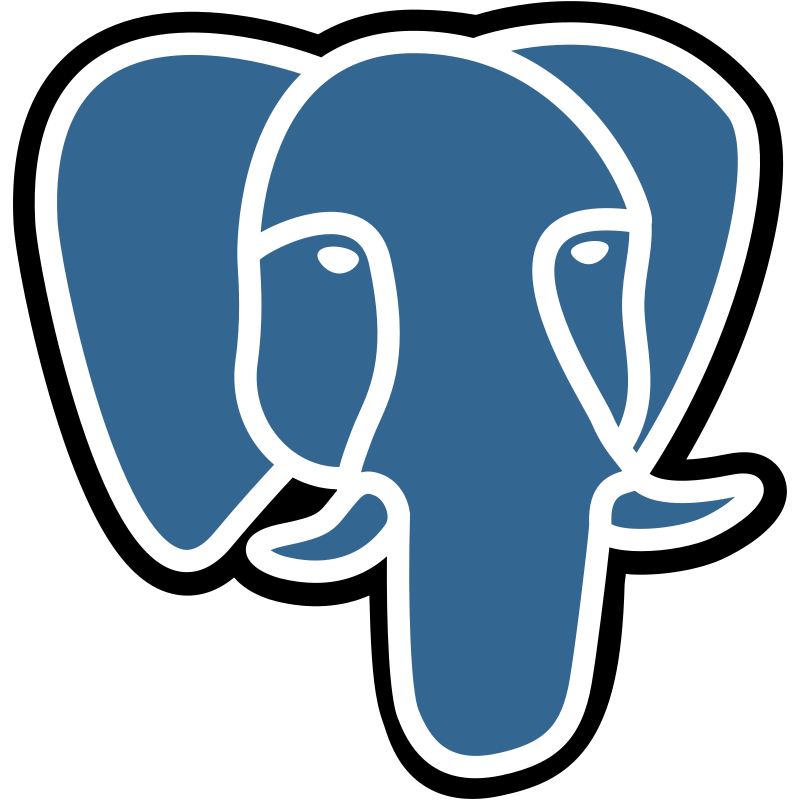
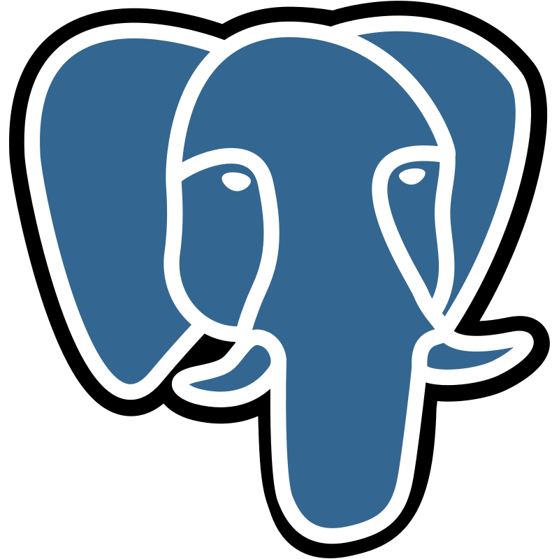
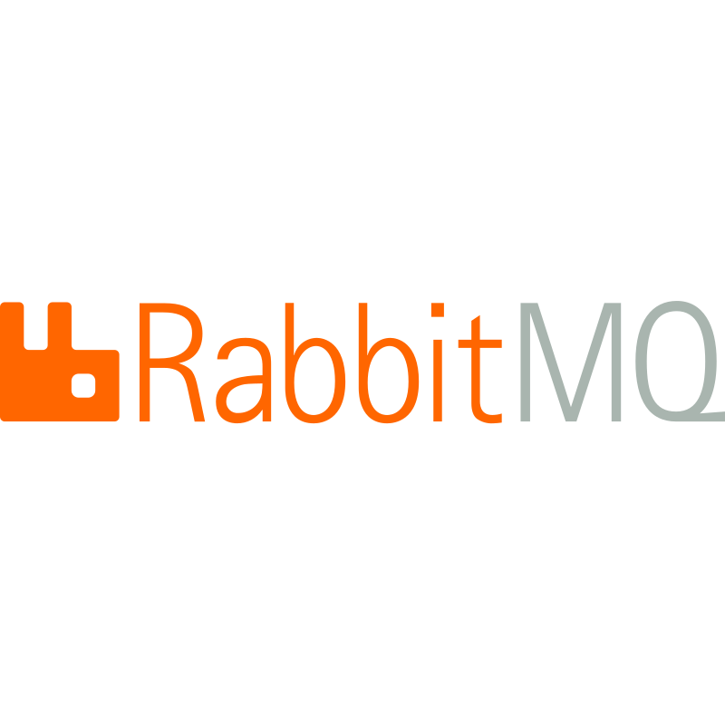
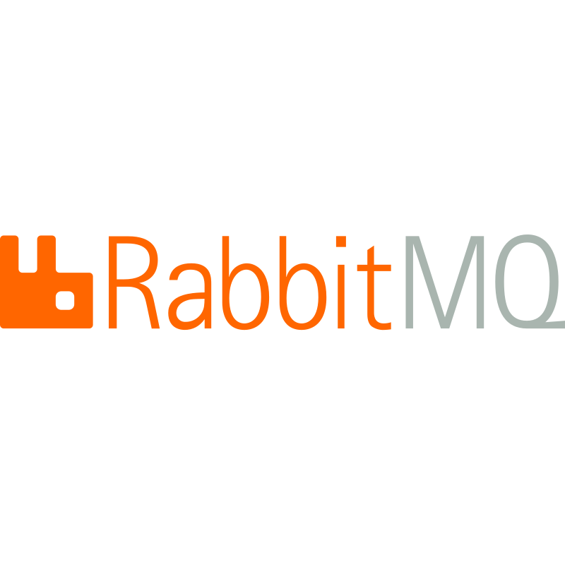

Adwin N. Siswoyo
I'm Backend Engineer
Intro
I am a Backend Engineer Go at Jubelio, based in Jakarta, Indonesia. A Backend Engineer who Loves Creating REST APIs for both mobile and front-end developers.
About.
I am eager to solve real-life problems, enjoy researching, and improved with new technologies.
- Blog: blog.cryppy.xyz
- City: Jakarta, Indonesia
- Education: Informatics Engineering
- Email: adwinnsiswoyo@gmail.com
Software Engineer with 4+ years of experience, I have focused on developing scalable microservices with Google Language (GoLang). I am eager to solve real-life problems, enjoy researching, and improved with new technologies. My journey in backend engineering has been marked by continuous learning, problem-solving, and delivering high-quality solutions. Moving forward, I strive to expand my expertise in system architecture, performance optimization, and distributed systems to contribute effectively to innovative and scalable software solutions.
Tech Stack
I specialize in backend development with Go, Javascript, Typescript, and PHP, leveraging frameworks like Echo, NodeJS, and Laravel. My expertise includes working with relational (PostgreSQL, MySQL) and NoSQL (MongoDB, Redis) databases, as well as message brokers like NATS.io (jetstream), RabbitMQ. I use Docker and Kubernetes for containerization and orchestration. Additionally, I am expanding my knowledge in Python, gRPC, AWS, and cloud computing to enhance scalability and performance in distributed systems.


 



 



Experiences
Throughout my journey in software development, I have cultivated a strong foundation in backend engineering, working on various projects spanning fintech, banking, e-commerce, and logistics. My experience includes developing scalable backend services, integrating third-party APIs, and ensuring robust system architecture. With a background in Informatics Engineering and Data Science, I have continuously honed my technical skills and problem-solving abilities to deliver efficient and high-performing solutions.
Education
Bachelor of Informatics Engineering & Data Science
2015 - 2019
University of Muhammadiyah Malang, Malang, Indonesia
Developed a strong foundation in programming, data science, and system architecture. Participated in projects that required critical thinking, algorithm optimization, and adherence to software development best practices. Actively engaged in various competitions, earning multiple awards in the IT field. Additionally, co-authored a patented software copyright alongside professors and college peers.
Senior Vocational High School & Software Engineering
2012 - 2015
Sekolah Menengah Kejuruan (SMK) 7 Samarinda, Indonesia
Focused on fundamental programming using Pascal, Visual Basic, Java, and database management. Gained hands-on experience with various programming languages and software development methodologies. At a young age, secured my first job by developing a cashier and online booking desktop application using Visual Basic.
Professional Experience
Jubelio (PT Guardia Teknologi Indonesia)
2024 - Present
Backend Engineer Go - Jakarta, Indonesia
- Developing and maintaining backend services for Jubelio Chat using Golang.
- Synchronizing Lazada Chat messages to enhance real-time communication.
- Implementing a product-sending feature for Shopee, Lazada, Tokopedia, and TikTok marketplaces.
- Integrating Jubelio Chat with TikTok, enabling seamless interactions.
- Developing Jubelio Shipment, especially on a service to generate bulk shipping labels from HTML to PDF.
- Developing Jubelio Store, focusing on order services, consumer management, cart functionality, and integration with Jubelio's omnichannel system.
Diacon Medica Technologies
2020 - 2023
Backend Developer - Jakarta, Indonesia
- Worked on critical services and conducted code reviews for improved efficiency.
- Developed fintech and banking solutions, ensuring security and compliance.
- Built and documented REST APIs using Swagger, GoDoc, and JSDoc.
- Integrated third-party services like NodeBB (CMS), Midtrans (Payment), SendGrid (Email), and Verihubs (SMS Gateway).
- Utilized AWS SDK and Firebase SDK for cloud-based solutions.
- Led the transformation of services from Node.js to Golang for performance optimization.
- Created essential backend services for billing, authentication, product management, and back-office operations.
Articles

The Story About Si Subur
This is a system called “Si Subur.” What does Si Subur mean? In Indonesia, “subur” means fertile, lush, or productive (synonyms include gemuk, gendut, etc.). The “fertility” I want to talk...
Read more
What I Learned - Redis Keyspace Notification
First of all apa itu redis keyspace notification? sederhanya, ini adalah sebuah publish-subscribe pada redis dimana ketika terjadi sebuah perubahan data pada redis, maka akan terdapat notif. Kalau sudah sering develop arsitektur yang menggunakan microservice tentunya...
Read moreCatatan Tentang "Musuh Bersama"
Keberpihakan. Saya adalah orang yang percaya bahwa ga ada satupun manusia di dunia yang tidak berpihak. Pada dasarnya kita semua akan berpihak pada kebenaran yang kita yakini.
Read more
Golang - Add New Element Without Redudancy
Ga kayak di javascript (JS) kita bisa memapulasi data banyak dengan library bawaan. Entah itu buat searching element di array, remove element di array atau bahkan...
Read more